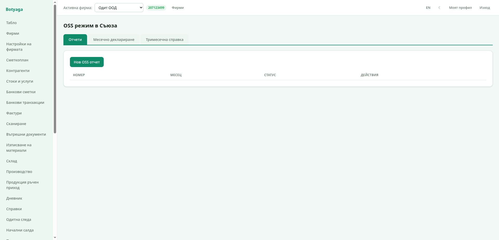

Начало · OSS режим в Съюза
OSS режим в Съюза
Дистанционни продажби към ЕС.
Включете OSS режим в Съюза в настройките на фирмата (регистриран е-магазин). На фактурата има отметка OSS продажба и държава на сделката; ставките се предлагат по държавата (DE 19/7/0).
Очетите по чл. 119 ал. 5, месечното деклариране с вид 81 и тримесечната справка-декларация по чл. 159 (части 2А/2Б/3/4/5) са в страницата OSS. Всичко се сваля и носи PDF протокол.
